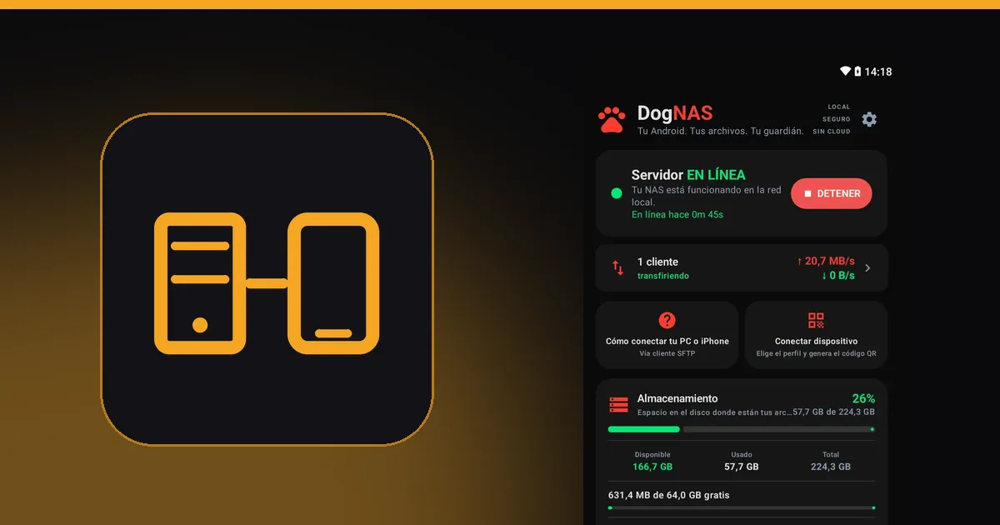

NAS tradicional o servidor Android: cuál elegir para tu casa

"¿Necesito un NAS o me sirve un Android viejo?" Es la duda de quien quiere guardar fotos, videos y documentos en casa sin depender de la nube. La respuesta honesta es: depende de lo que vayas a guardar y de cuánto valga para ti. Esta comparación muestra dónde brilla cada opción y dónde se queda corta.
Qué es cada uno
- NAS tradicional: un equipo dedicado, con una o más bahías para discos, sistema propio y, en general, varias funciones además de guardar archivos.
- Servidor Android con DogNAS: un celular o tablet Android (7.0 o más reciente) que queda encendido en casa y sirve los archivos por Wi-Fi, con los datos en la memoria, en una tarjeta SD o en un disco/pendrive USB.
Comparación
Costo inicial. El NAS exige comprar el equipo y los discos. El Android viejo ya lo tienes; DogNAS es gratuito para empezar, y Pro es una compra única, sin suscripción.
Facilidad. En DogNAS instalas una app, tocas Iniciar y vinculas los dispositivos con código QR y PIN, sin tocar el router. El NAS suele pedir más configuración.
Protección ante la falla de un disco. Un NAS con varios discos puede usar RAID, que mantiene los datos disponibles si falla un disco. DogNAS no tiene RAID y no junta varios discos en un único volumen: cada disco es independiente, y un disco puede fallar. Ninguno reemplaza una copia de seguridad.
Funciones extra. El NAS puede ejecutar contenedores, servidores multimedia y otros servicios. DogNAS es un servidor de archivos, no un mini centro de datos.
Rendimiento con muchos usuarios. Un NAS está hecho para atender varios dispositivos a la vez, como varios videos en alta resolución. Un celular da abasto para un uso doméstico simple, pero tiene límites.
Energía y espacio. El Android consume poca energía, ocupa poco lugar y tiene batería propia, que ayuda en cortes breves de luz. Cada fabricante limita las apps en segundo plano de forma distinta, así que conviene revisar los requisitos.
Espacio de almacenamiento. El NAS crece con discos más grandes. En DogNAS, el plan Gratis administra hasta 64 GB y Pro usa todo el almacenamiento del dispositivo, incluida una tarjeta SD o un disco USB (que requiere USB OTG).
Cuándo elegir cada uno
Un Android con DogNAS basta cuando quieres guardar fotos, videos y documentos de la familia, liberar espacio en el celular, pasar archivos entre dispositivos y no quieres gastar en equipo.
Compra un NAS cuando varias personas ven video a la vez, necesitas redundancia de discos, quieres ejecutar servicios avanzados o vas a guardar muchos terabytes.
Puedes usar los dos
Mucha gente empieza con el Android que ya tiene y, si la necesidad crece, pasa a un NAS. DogNAS habla SFTP, un protocolo que entienden muchos equipos y programas, así que no quedas atado.
Para ver cómo armar el tuyo, lee un NAS casero sin comprar un NAS o el paso a paso de cómo convertir un Android viejo en un servidor de archivos.